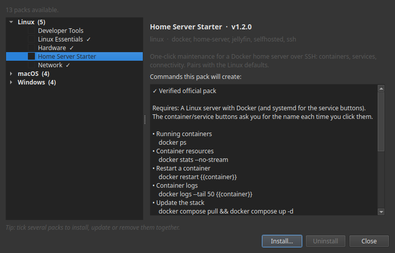

Button Packs
A button pack is a ready-made set of buttons for a common job — keeping a server healthy, freeing up disk space, restarting a service. Install one, and those tasks become buttons you tap, on your computer or your phone. No terminal, no commands to remember.
Every pack is free. You browse them right inside Commandeck, install one in a tap, and remove it just as easily.

What a pack is
A hand-picked toolkit for one kind of setup, built by people who actually run it. Install it in seconds and your most common chores each become a single, organized button — ready to go.
- Curated by practitioners — the actions that matter, none of the noise.
- Free for everyone — install as many as you like, on desktop (Linux, macOS, Windows) and Android.
- Verified — official packs are digitally signed; Commandeck checks the signature and shows a ✓ badge before you install, so you know it's genuine and untampered.
- Safe by design — every button is visible and editable, and anything that changes or stops something asks before it runs.
Getting a pack: the gallery
There's no file to hunt for and no account to create. Everything happens inside the app:
- Open Commandeck → menu ☰ → Button Packs.
- Browse the gallery. Pick a pack to read what it's for and see the exact commands each button will run.
- Tap Install. The buttons appear in your grid, already organized.
- Changed your mind? Open the pack again and tap Uninstall — it removes just that pack's buttons and leaves the rest of your grid untouched.
- When a newer version of a pack you have is available, the gallery flags it with an ⬆ update badge; tap Update to refresh it in place.
Doing several at once. Tick the checkbox on any packs you want and use the action bar to install, update or remove them together. A mixed selection is fine — Commandeck installs the new ones and updates the ones you already have in a single pass, then tells you what changed.
The gallery fetches packs over the internet and verifies each one before it's installed.
Where packs run
Installing a pack is always free, and the buttons run locally — on the computer where Commandeck is installed — at no cost.
The real value is running them on your home server. To send a pack's commands to another machine over SSH, you'll use Pro — and every install includes a free 14-day trial, no card. Pro is a one-time $29 — buy once, yours for good — that keeps Commandeck going; the packs themselves stay free, forever.
Available packs
🧰 Developer Tools
Git, Python and Node status at a glance — for people who code on the box, not just run a server. Git status, log and diff, your Python version, outdated pip packages, your Node version, and more.
🏠 Home Server Starter
One-click maintenance for a Docker home server over SSH: see your running containers and what they're using, restart a container or a service, follow the logs, update the whole stack, clean up Docker disk, and check your public IP and connectivity. Pairs with the Linux defaults — point it at your server with the free trial.
More on the way — game-server admin, local-AI rigs, homelab/NAS, and whatever the community asks for next.
Packs that grow with you — and with your community
A pack isn't a frozen file. It's a living toolkit:
- Free updates. When a pack gains new actions or sharper ones, reinstall it to update in place — your assigned machine and your personal tweaks stay exactly as you left them, and Commandeck asks before changing anything you customized.
- Shaped by the community. These packs come from the same forums, Discords and subreddits you already hang out in. Wish a certain action existed? Suggest it — the best ideas ship to everyone in the next update.
Frequently asked questions
Do I need to be technical? No. A pack is a screen of buttons — tap one, read the result. Anything that could change something asks you to confirm first, and you can always see exactly what a button does.
How do I install a pack? Open ☰ → Button Packs, pick one, and tap Install. To remove it, open the same pack and tap Uninstall. Want several? Tick their checkboxes and install, update or remove them all at once from the action bar.
Do packs cost anything? No — every pack is free. Installing a pack and running its buttons locally is free. Running them on another machine over SSH uses Pro (which comes with a free 14-day trial).
Will it work on my phone and my computer? Yes — Linux, macOS, Windows and Android. Open the gallery and install on each device.
Are updates really free? Yes. Reinstall the pack and Commandeck updates it in place: it keeps the machine you assigned, refreshes the buttons you haven't touched, and asks before changing anything you customized.
Can I customize the buttons? Absolutely — rename them, recolor them, adjust them. On the next update your changes are respected; Commandeck never overwrites your work without asking.
My setup is a little different — will it still fit? Most actions work out of the box. A few may expect a tool or folder that's common to that kind of setup (each pack's page tells you what it assumes). And if something you need is missing, tell us — that's exactly how packs grow.
Do I need an account? No accounts, no sign-ups, no personal data.
Is it safe to run? Official packs are signed and verified before they install. You're always in control: every button is visible and editable, and anything that changes or stops something asks you to confirm before it runs.
Can I suggest a whole new pack? Please do. The next packs come straight from what people ask for — your community might be the one we build for next.